La conception d'origine de cette étude a supposé la disponibilité de données suffisantes pour décrire de manière
adéquate l'apparence physique, les caractéristiques de manœuvres, les portée, direction et trajectoire probable de
l'objet ou des objets observés. Cependant, la familiarité avec les données, acquise au cours de la traduction et
transcription des rapports sur cartes perforées, a indiqué que relativement peu de variables ou facteurs spécifiques
apporteraient des études de correlation significatives. Soit les données d'origine étaient trop subjectives, soit le
manque de complétude des rapports d'origine aurait sérieusement réduit l'échantillon d'une variable spécifique.
Des tabulations préliminaires de divers tris ont justifié l'impossibilité de dériver des résultats statistiques à
partir de certaines variables, telles que le mouvement de l'observateur pendant l'observation, le son, le paramètre de
forme, la taille, la vitesse et l'accélération angulaire, l'orientation d'apparition et de disparition, l'élévation
initiale et finale, l'altitude et l'orientation de l'objet. Les variables statistiquement exploitables présentées dans
cette étude incluent date, heure, lieu, durée, fiabilité, et méthode d'observation de l'observation, ainsi que les
attributs physiques de nombre, couleur, vitesse, forme, intensité lumineuse et identification des objets observés.
La présentation des distributions de fréquence et des pourcentages de toute variable doit être interprétée à la
lumière de l'échantillon des incidents représenté. Par exemple, l'analyse des couleurs rapportées pour les objets
observés, basée sur l'ensemble des observations, pourrait amener à une représentation trompeuse de la
distribution de la couleur rapportée des objets, à cause de la multiplicité des rapports sur certains des phénomènes.
D'un autre côté, la distribution des pourcentages de l'intensité lumineuse rapportée par chaque observateur est plus
susceptible d'être exacte qu'une distribution basée sur 1 rapport pour chaque phénomène. Afin de s'assurer qu'a été
faite la présentation la plus exacte, et d'éviter la possibilité d'un échec à découvrir des motifs ou tendances
quelconques inhérents aux données, les variables ont été étudiées sur 5 bases ou échantillons différents. Ces
échantillons, et leur relation numérique l'un avec l'autre, ont été les suivants :
Ensemble des observations (tous les rapports)
3201 cartes
Observations unitaires, tous observateurs
2554 cartes
Observations unitaires, observateur seul
2232 cartes
Observations unitaires, observateurs multiples
322 cartes
Observations d'objets
2199 cartes
Les tabulations préliminaires ont indiqué que les échantillons sur les observations unitaires, observateur
seul, et observation unitaires, observateurs multiples, n'apporteraient pas matériellement à cette étude. En
conséquence, bien que les distributions de fréquence aient été enregistrées et soient disponibles pour étude, elles ne
sont pas présentées dans ce rapport.
Les bases de l'ensemble des observations, des observations unitaires (en considérant l'ensemble des
obervateurs), et des observations d'objets sont présentées en annexe A dans les tableaux A1 à A240. Une étude
critique de ces tabulations révèle qu'il n'y a pas de changemenet apparent dans la distribution d'une variable
quelconque d'une base à l'autre, et qu'aucun motif ou tendance marqué n'existe dans aucun échantillon.
Présentation graphique
La représentation graphique de l'information importante contenue dans les tableaux est présentée dans les figures 1 à
38. Ces figures présentent les distributions des variables importantes seulement par le nombre total de cas dans
chaque catégorie d'identification, puisqu'aucune différence significative n'a été trouvée entre les distributions des
identifications "Certaine" et "Douteuse" des objets par rapport aux variables. Une étude chronologique de ces chiffres
permettra d'offrir une image globale de l'information tabulée, sans le besoin d'une étude détaillée des tableaux.
Un examen critique des chiffres va montrer qu'aucune tendance, motif ou correlations ne doivent être trouvées, à
l'exception des figures 18 à 30. La similarité apparente des distributions montrées par ces graphiques mirroir,
figures 18 à 23, a été testée par des méthodes statistiques
qui ont montré qu'il y avait une faible probabilité que les distributions des connus et inconnus par
ces caractéristiques soient les mêmes. Ces tests et leur interprétation sont discutés dans la section suivante. Pour
les objectifs de cette étude, les zones stratégiques, montrées dans les figures 32 à 38, et les tableaux A223 à A240,
annexe A, ont été définies sur la base de concentration de rapports d'observations d'objets dans une zone.
Aucune autre interprétation des autres tableaux ou graphiques n'a été considérée nécessaire.
Figure 1 - Fréquence des observations par année pour les observations d'objet, unitaires et dans leur
ensemble
Figure 2 - Distribution des évaluations d'observations d'objets, unitaires et dans leur ensemble pour
toutes les années
Figure 3 - Distributions des observations d'objets par évaluation pour toutes les années avec comparaisons
de chaque année pour chaque groupe d'évaluation
Figure 4 - Distribution des observations d'objets par évaluation pour toutes les années et chaque année
Figure 5 - Distribution des observations d'objets par évaluation dans les mois pour toutes les années
Figure 6 - Distribution des observations d'objets par évaluation certaine et douteuse pour toutes les
années et chaque année A-7484Figure 7 - Fréquence d'observations d'objets et d'évaluations d'objets inconnus par mois, 1947-1952 [C-7485]Figure 8 - Distribution des observations d'objets par groupes de fiabilité avec distribution des
évaluations pour chaque groupe [A-7486] Figure 9 - Distribution des observations d'objets parmi les 4 groupes de fiabilité pour l'ensemble des
années et chaque année [A-7487]Figure 10 - Distribution de l'ensemble des observations d'objets par groupes de fiabilité, séparés en
observateurs militaires et civils avec distribution d'évaluation pour chaque séparation [A-7488]Figure 11 - Distribution des observations d'objets par couleurs signalées d'objet(s) avec distribution
d'évaluation pour chaque groupe de couleur [A-7489]
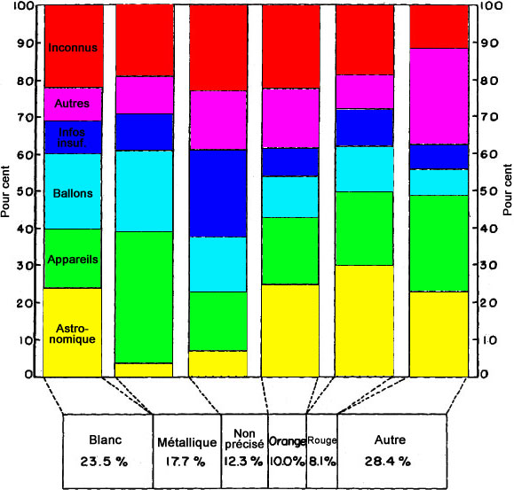
Figure 12 - Distribution des observations d'objets par nombre d'objets vus par observation avec
distribution d'évaluation pour chaque groupe [A-7490]Figure 13 - Distribution des observations d'objets par durée vus par observation avec distribution
d'évaluation pour chaque groupe de durée [A-7491]Figure 14 - Distribution des observations d'objets par mois parmi les 8 groupes de durée pour l'ensemble
des années [A-7492]
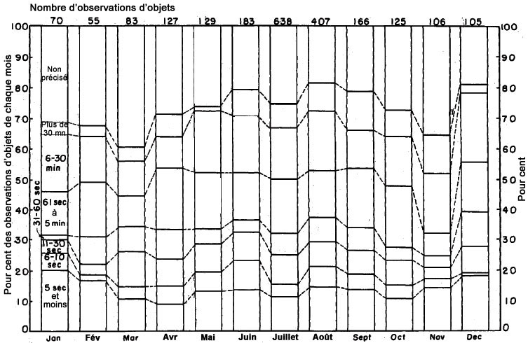
Figure 15 - Distribution des observations d'objets par forme signalée d'objet(s) avec distribution
d'évaluations pour chaque groupe de formes [A-7493]Figure 16 - Distribution des observations d'objets par vitesse signalée d'objet(s) avec distribution
d'évaluations pour chaque groupe de vitesse [A-7494]Figure 17 - Distribution de l'ensemble des observations par lieu d'observation pour l'ensemble des années
et chaque année [A-7495]Figure 18 - Comparaison d'observations d'objets connus et inconnus par couleur,
[A-7496]Figure 19 - Comparaison d'observations d'objets connus et inconnus par nombre d'objets par observation,
A-7497Figure 20 - Comparaison d'observations d'objets connus et inconnus par vitesse,
A-7498Figure 21 - Comparaison d'observations d'objets connus et inconnus par durée, A-7499
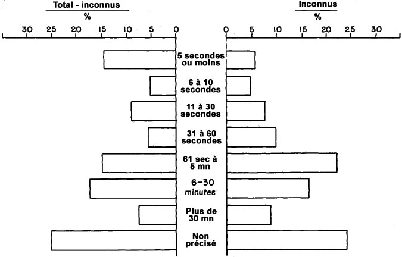
Figure 22 - Comparaison d'observations d'objets connus et inconnus par forme, A-7500Figure 23 - Comparaison d'observations d'objets connus et inconnus par intensité lumineuse,
A-7501Figure 24 - Comparaison de la distribution mensuelle des observations d'objets évaluées comme
astronomiques versus le total des observations d'objets moins les astronomiques A-7502Figure 25 - Comparaison de la distribution mensuelle des observations d'objets évaluées comme appareils
versus le total des observations d'objets moins les appareils A-7503Figure 26 - Comparaison de la distribution mensuelle des observations d'objets évaluées comme ballons
versus le total des observations d'objets moins les ballons A-7504Figure 27 - Comparaison de la distribution mensuelle des observations d'objets évaluées comme informations
insuffisantes versus le total des observations d'objets moins les informations insuffisantes A-7505Figure 28 - Comparaison de la distribution mensuelle des observations d'objets évaluées comme autres
versus le total des observations d'objets moins les autres A-7506Figure 29 - Comparaison de la distribution mensuelle des observations d'objets évaluées comme inconnus
versus le total des observations d'objets moins les inconnus [A-7507]
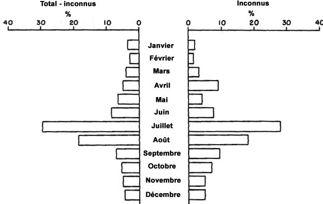
Figure 30 - Profils de caractéristiques des observations d'objets par échantillon total, évaluations de
connus et évaluations individuelles de connus, avec évaluation des inconnus surimposéeA-7508
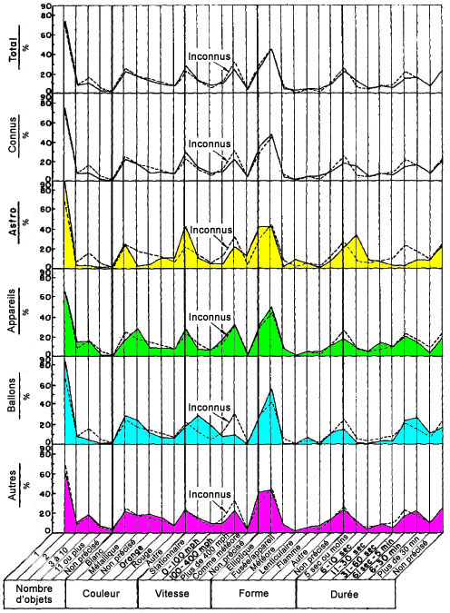
Figure 31 - Fréquence des observations d'objet, unitaires et en totalité dans les Etats-Unis 1947-1952,
par subdivisions de 1 ° de latitude et longitude
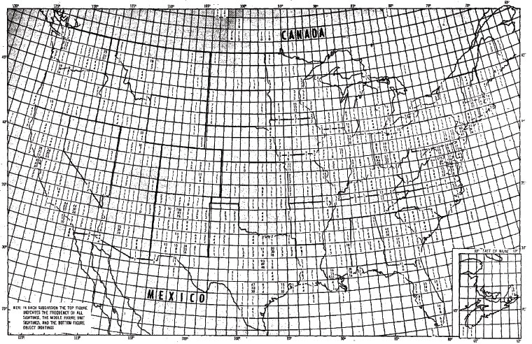
Figure 32 - Distribution des observations d'objets par évaluation pour les 12 zones régionales des
Etats-Unis, avec les zones stratégiques situées (les zones stratégiques ont été déterminées sur la base de la
concentration d'observations d'objets)
Figure 33 - Comparaison de l'évaluation d'observations d'objets dans les zones stratégiques de la région
centre est [B-7511]
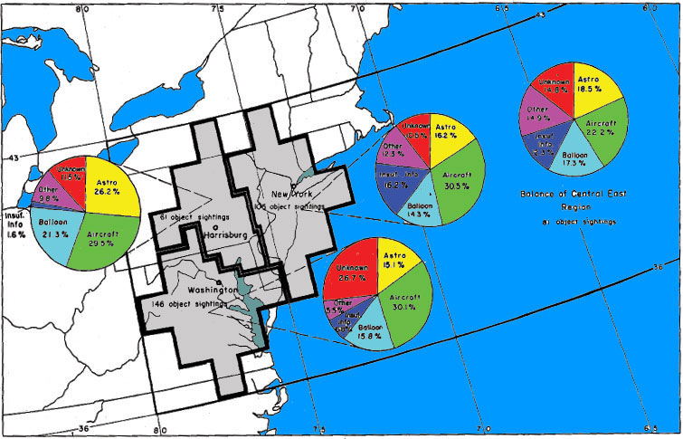
Figure 34 - Comparaison de l'évaluation d'observations d'objets dans les zones stratégiques de la région
centre midwest [B-7512]
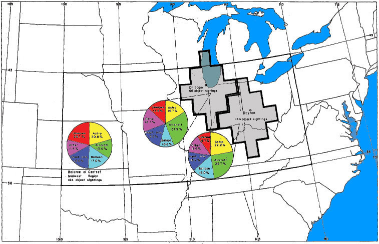
Figure 35 - Comparaison de l'évaluation d'observations d'objets dans les zones stratégiques de la région
centre farwest [B-7513]
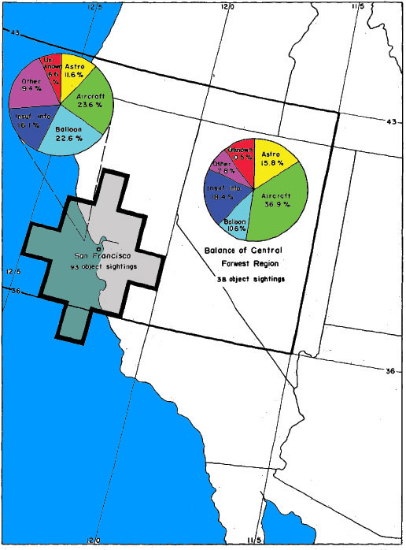
Figure 36 - Comparaison de l'évaluation d'observations d'objets dans les zones stratégiques de la région
midwest sud [B-7514]
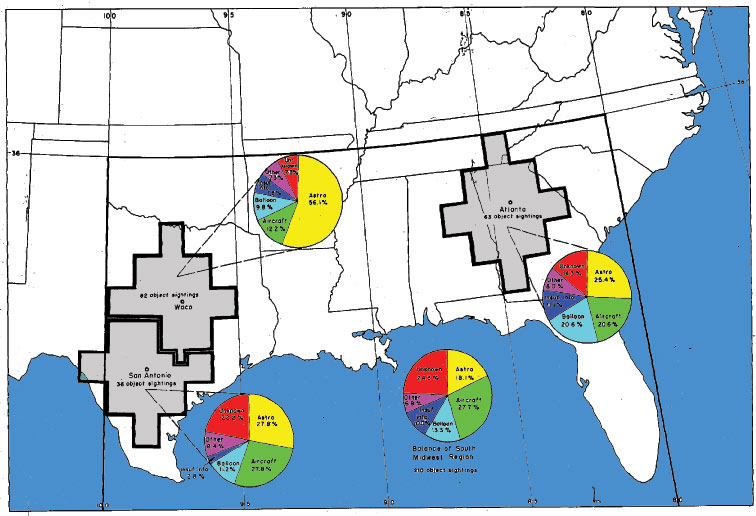
Figure 37 - Comparaison de l'évaluation d'observations d'objets dans les zones stratégiques de la région
sud ouest [B-7515]Figure 38 - Comparaison de l'évaluation d'observations d'objets dans les zones stratégiques de la région
farwest sud [B-7516]
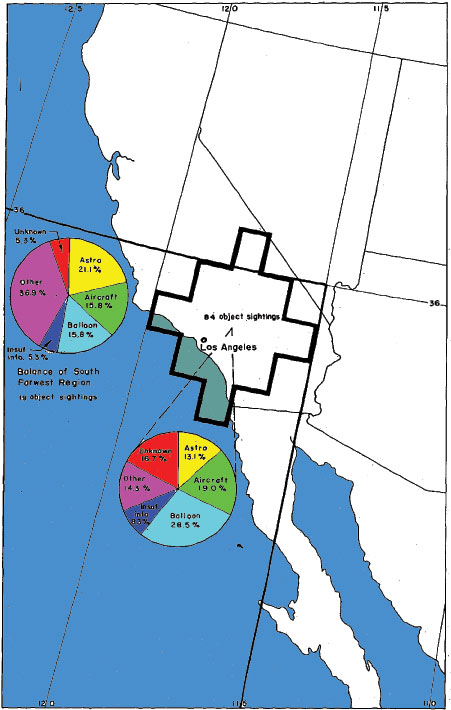